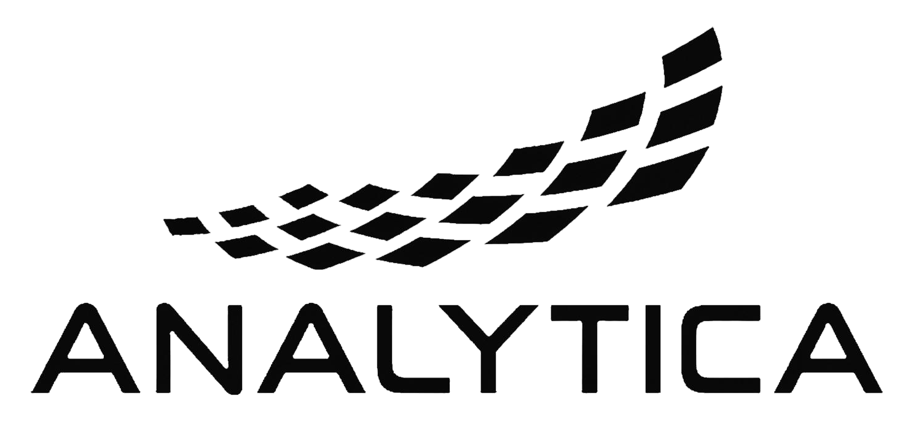
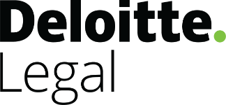
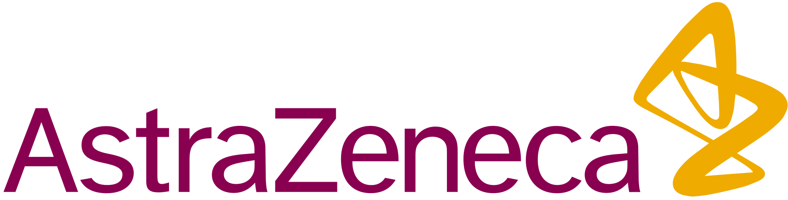

Universitat de Barcelona
Máster de Acceso a la Abogacía y Procura
I am a Senior Economic Adviser at Banca March while completing legal qualification studies in Barcelona.
My work focuses on antitrust economics, regulation, financial systems, and the strategic governance of technology.
My doctoral work at Yale examined antitrust intervention in platform markets, with particular attention to gatekeeping, digital power, and the economics of ecosystem control.
Máster de Acceso a la Abogacía y Procura
Bachelor’s Degree in Law
MSc in Management
Bachelor’s Degree in Economics
Banca March

Analytica Consulting
World Bank / OECD
Almirall

Deloitte

AstraZeneca
Barcelona City Council
For collaborations, advisory work, speaking engagements, or research invitations.
muntaner@icab.cat
PGP-encrypted email and secure channels are available for confidential communication.
Barcelona, Catalonia, Spain